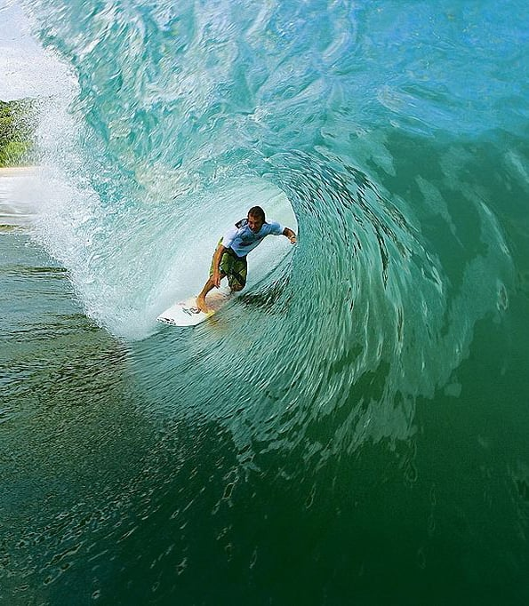

Las mejores aventuras de Nicaragua.
Mencionados en una sola App.
Actividades Disponibles en Nicaragua
Sand
Bor
ding
En el volcan cerro negro se puede realizar una actividad llamada Sandboarding donde descenderas 728 metros de altura en menos de 10 minutos
Surfing
en
Leon
y Rivas.

Los lugares donde se puede realizar surf en estos dos departamentos son: puerto Sandino, Popoyo, Colorado, Aserradores y San Diego.
Canopy
en
el
volcan
Mombacho.

Otros lugares donde se puede realizar Canopy son los siguientes: La Brellera en San Rafael del Norte, Jinotega, en el cerro El Calvario en Matagalpa, en San Juan del Sur, Laguna de Tiscapa Managua y Catarina en Masaya.
Kayak
en
el
lago
Cocibolca.
Esta actividad se realiza específicamente en las isletas de Granada, el caudaloso río San Juan y en la única isla del mundo que tiene dos volcanes en lago de agua dulce, la Isla de Ometepe.
Ciclismo
en
Matagalpa.
Esta actividad se puede realizar en reserva Cerro El Arenal, Matagalpa, un lugar con clima agradable y variedad de senderos y el municipio de El Crucero en Managua, que también tiene un clima agradable, además de valles frondosos que te llevarán a conocer increíbles vistas.